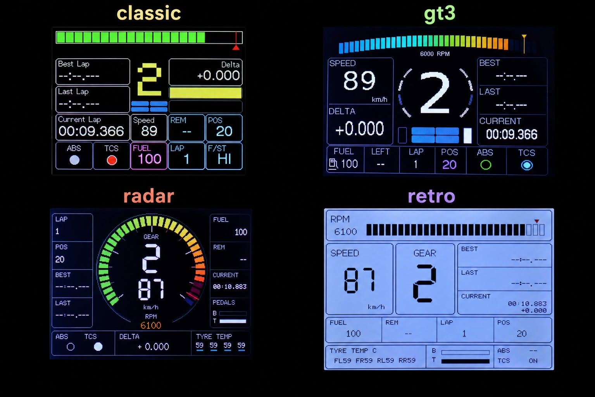

USB Web Installer
ESP32 GT7 Dashboard
Install the dashboard firmware directly from a compatible desktop browser. No additional software or tools are required.
- Connect the classic ESP32 board with a data-capable USB cable.
- Close serial monitors and other programs using its serial port.
- Select Install firmware, choose the port, and confirm.
- Leave the board connected until the installation finishes.
Select the controller fitted to your ESP32-2432S028.
⚠️ ESP32-2432S028 only. Installing replaces the firmware currently on the device.

✅ Installation complete
Next steps:
- Disconnect USB.
- Reconnect power.
- Connect to Wi-Fi: GT7-DASH-SETUP
❤️ Enjoying ESP32 GT7 Dashboard?
If this project helped you build your GT7 dashboard:
⭐ Star this repository📢 Share it with other GT7 and sim racing enthusiasts.
Every star and share helps the project reach more people.